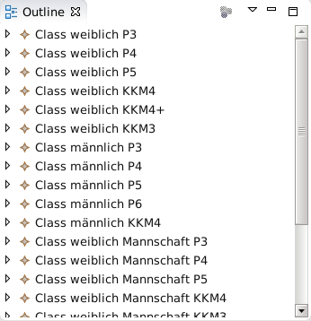

Die Berechnung erfolg wettkampfklassenweise. Die Punkte werden dabei entsprechend den Berechnungsvorschriften siehe Berechnungsvorschriften zusammengezählt. Ist keine besondere Berechnungsvorschrift für eine Wettkampfklasse oder Disziplin angegeben, so werden alle einzelnen Wertungen addiert.
Aus den Gesamtpunkten ergibt sich die Platzierung. Dabei entspricht die höchste Punktzahl dem 1.Platz. Sind gleiche Punktzahlen vorhanden, so entspricht das einer gleichen Platzierung. Sind gleiche Punktzahlen bei Finals vorhanden, so wird die Reihenfolge aus dem Mehrkampf ermittelt. Wettkämpfer, die außer Konkurenz starten werden bei der Platzierung nicht berücksichtigt. Letztendlich werden die Wettkämpfer bzw. Mannschaften einer Wettkampfklasse entsprechend ihrer Platzierung sortiert.
Procedure 22. Berechnung von Wettkampfergebnissen
-
Öffne den "Wertungs"-Editor. Hierfür gibt es mehrere Methoden:
- Drücke im "Übersicht"-Editor auf Wertungen.
- →
-
Wähle die Lasche class
 aus.
aus.
-
Wähle im "Outline"-View die Wettkampfklasse, für die die Berechnung und Sortierung durchgeführt werden soll.
 -
Selektiere einen Wettkämpfer in dieser Wettkampfklasse durch klicken der Maus auf den Namen des Wettkämpfers. Dabei ist es unerheblich welcher Wettkämpfer in der Klasse gewählt wird. Es ist nur wichtig, dass überhaupt ein Wettkämpfer in der Klasse selektiert ist.
-
Berechne und sortiere die Wettkampfklasse mittels →
![[Note]](assets/images/note.svg)
Note Dieser Menueintrag ist nur verfügbar, wenn der "Wertungs"-Editor mit der Lasche Class im Vordergrund ist und ein Wettkämpfer in diesem Editor selektiert wurde.
-
Wiederhole die Auswahl der Wettkampfklasse, selektieren eines Wettkämpfers, Berechnung (also die letzten 3 Schritte) für alle Wettkampfklassen.
-
Speichere die Datei mittels →